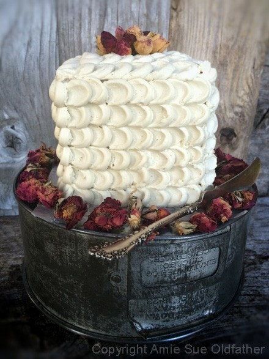

Five Layer Petal Cake
Now that you have already scanned the ingredient list and I now have your full attention… Let me start off by saying that this style of cake decorating is super simple, with an incredibly impressive outcome. Most importantly, it doesn’t require hours of practice or any fancy decorating equipment, just a piping bag, a piping tip, and a small spoon!
I would never create something that I didn’t think you couldn’t handle. Because in reality, if you can’t do it… I wouldn’t be able to do it either. So put aside any disbelief in yourself, and let’s dive in.
If you are a veteran in preparing raw food recipes, you will know that a raw dessert can win the heart of anyone! But when you take this cake and apply this simple decorating tip, not only will you be winning their hearts, but you will be gaining their admiration.
By decorating this cake with dried flowers, I found that it added an exquisite, rustic flare. You could use any flower as long as it is organic and edible. Most people won’t eat the flowers, but you never want to take the chance of having someone eat a non-edible flower and getting sick.
You could use fresh flowers as well; just make sure you inspect them for any bug-a-boos. We don’t want any moving parts on our cake. :)
Before I let you go… if this decorating technique seems too overwhelming, don’t be afraid to practice, I do all the time. I just grab my cutting board, pastry scraper, sit down at the table and practice a technique over and over. This practice will build your confidence level, and before you know it, you will be well on your way to creating a masterpiece.

Ingredients:
Yields 4x4x5” cake
Vanilla layer:
- 1 cup raw almond flour
- 1 cup raw cashew flour
- 1 cup shredded coconut, powdered
- 1/4 tsp sea salt
- 1/4 cup raw honey or raw coconut crystals
- 2 Tbsp cold-pressed coconut oil
- 1 tsp vanilla extract
- 1/2 tsp almond extract or butterscotch flavor
Chocolate layer:
- 1/2 cup raw almond flour
- 1/2 cup raw cashew flour
- 1/2 cup shredded coconut, powdered
- 2 Tbsp raw cacao powder
- 1/4 tsp sea salt
- 1/4 cup maple syrup
- 1 Tbsp cold-pressed coconut oil
- 1/2 tsp vanilla extract
Peanut butter layer:
- 1/2 cup raw almond flour
- 1/2 cup raw cashew flour
- 1/2 cup shredded coconut, powdered
- 1/4 tsp sea salt
- 1/4 cup natural peanut butter
- 3 Tbsp maple syrup
- 1 Tbsp cold-pressed coconut oil
- 1/2 tsp vanilla extract
Decoration:
Preparation:
Vanilla layer:
- Place the honey and the coconut jar in the sink and fill with really hot water. Make sure the lids are on tight because they will bobble around. This will soften them up while you work on the rest of the recipe.
- Prepare the cake pan by lightly coating it with coconut oil. Set aside. You can skip this step if you have a pan with a removable bottom as I used.
- Powder the coconut by placing it in a spice or coffee grinder until it reaches a powder, flour-like texture.
- Sift the almond, cashew flour, powdered coconut, and salt together into a large bowl.
- In a small bowl, add the melted honey, coconut oil, and extracts. Whisk together and pour over the dry ingredients. With your hands, mix everything together. The batter should be damp and sticks together when pressed together.
- Press the cake batter into the cake pan and level the top flat. Remove the cake, wrap in plastic and place in the freezer for a few hours or overnight.
Chocolate layer:
- Powder the coconut by placing it in a spice or coffee grinder until it reaches a powder, flour-like texture.
- Sift the almond, cashew flour, powdered coconut, cacao powder, and salt together into a large bowl.
- In a small bowl, add the maple syrup, coconut oil, and vanilla. Whisk together and pour over the dry ingredients. With your hands, mix everything together. The batter should be damp and sticks together when pressed together.
- Press the cake batter into the cake pan and level the top flat. Remove the cake, wrap in plastic and place in the freezer for a few hours or overnight.
Peanut butter layer:
- Powder the coconut by putting it in a spice or coffee grinder until it reaches a powder, flour-like texture.
- Sift the almond, cashew flour, powdered coconut, and salt together into a large bowl.
- In a small bowl, add the peanut butter, maple syrup, coconut oil, and vanilla. Whisk together and pour over the dry ingredients. With your hands, mix everything together. The batter should be damp and sticks together when pressed together.
- Press the cake batter into the cake pan and level the top flat. Remove the cake, wrap in plastic and place in the freezer for a few hours or overnight.
Frosting:
- Make the frosting, as indicated in the recipe link above. The frosting will need to be chilled for 4+ hours (until firm but workable). I ended up chilling mine overnight and then removed from the fridge, let it rest at room temp for about an hour.
Assembly:
- Remove each cake layer from the freezer. Tilt on its side and with a sharp knife cut in half, creating two slabs of each flavor.
- Starting from the bottom, I layered the cake with; peanut butter layer, frosting, chocolate layer, frosting, vanilla layer, frosting, chocolate layer, frosting, and topped with the other peanut butter layer.
- I decided to hold back one layer of vanilla from the cake, which became a mini snacking cake for Bob. See the photo at the bottom.
- Spread a layer of frosting in between each layer. I placed the frosting in a piping bag with a 1/2” circular tip.
- You can use a knife, but I found the piping bag to be quick, precise, and easier to deal with.
- I left about a 1/4” lip around the outer edge, so that way, when I pressed the next cake layer on top, it didn’t ooze out. Do this process in between each layer then on the very top cake.
- Now coat the whole cake with a very thin layer of frosting.
- Don’t worry about it looking pretty; this is what is called a “crumb layer.”
- This will lock in all the cake crumbs, so they don’t get mixed up in your decorating.
- Place in the fridge for about 30+ minutes or until the frosting is “dry” to the touch.
- While the cake is chilling, prepare the piping bag. I used the same circular tip. Load with frosting and work out any air bubbles.
- Remove the cake from the fridge and start the petal technique.
Petal technique:
- The Petal Technique uses a round tip on your piping bag and a small spatula or small spoon to create the effect. It’s a simple process, just very time-consuming.
- Pipe a vertical line of icing dots.
- Place the offset spatula or a small spoon tip in the middle of the dot, press down and drag.
- Continue around the cake, one vertical row at a time. This technique will take a little time, but it is well worth it!
- If the frosting starts to get to warm in the piping bag (due to room temp or the warmth of your hand), return it to the fridge to set up a bit. I didn’t have to do this, but I can see where it might be needed if the climate or room temp is warmer than 70 degrees (F).
- On the very last row, don’t spread the dot as far as the other rows. Make sure that this last row is on the back of the cake, though it isn’t too noticeable.
Decide the order of layers; peanut butter, chocolate, vanilla, chocolate, and
peanut butter. This is how I made this cake. I had one slab left over, so I made
a small mini cake for Bob. See below.
Pipe a layer of frosting in between each layer.
Before you start the petal effect, you want to spread a thin “crumb” layer
of frosting on the cake.
Pipe a vertical line of frosting dots.
Place the off-set spatula or a small spoon tip in the middle of the dot, press down and drag.
Complete one row at a time.
Continue around the cake. This technique will take a little time, but enjoy the process!
As you start to complete more layers, it gets exciting to see the effect.
For the top, I worked my way from the outside to the inside, one dot at a time.
Top with organic, dried rose petals.
Enjoy your masterpiece!
© AmieSue.com